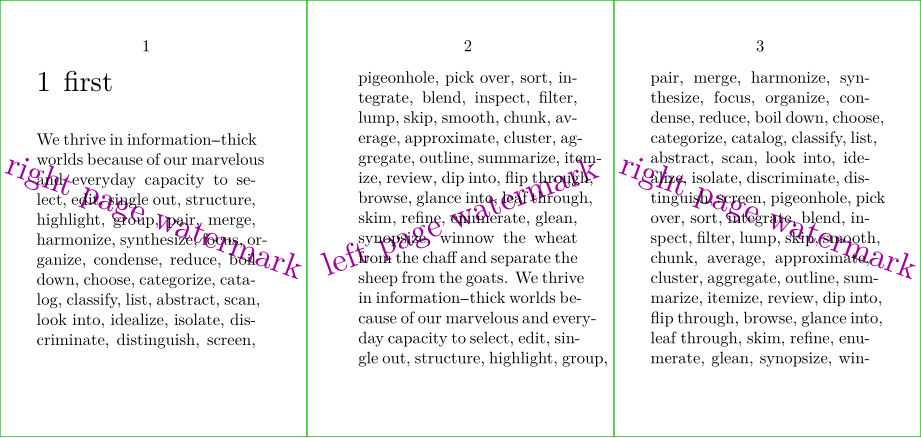

I was in need of adding a watermark to the background of a book. Left and right pages needed a different watermark. I also needed the ability to position the watermark anywhere on the page. Through a nice discussion on mailing list Hans was able to make clear how to go about this.
In my final usage of the code below, I changed the preset to bottomleft/bottomright and added hoffset/voffset values to position the text where I wanted it. The solution below would also allow for placing images in the background instead of text.
-
\definepapersize[sheet][width=156mm,height=74mm] \setuppapersize[A8][sheet] \setuppaper[nx=3,ny=1] \setuparranging[XY] \showframe[edge] \setuppagenumbering [alternative=doublesided] \setupcolors [state=start] \setupbackgrounds [leftpage] [background=Watermark-Left] \setupbackgrounds [rightpage] [background=Watermark-Right] \definelayer [Watermark-Left] [repeat=yes, width=\paperwidth, height=\paperheight] \definelayer [Watermark-Right] [repeat=yes, width=\paperwidth, height=\paperheight] \setlayerframed [Watermark-Left] [preset=middle] [foregroundcolor=middlemagenta, frame==off] {\scale[sx=2,sy=2]{\rotate[rotation=20.0]{left page watermark}}} \setlayerframed [Watermark-Right] [preset=middle] [foregroundcolor=middlemagenta, frame==off] {\scale[sx=2,sy=2]{\rotate[rotation=-20.0]{right page watermark}}} \starttext \chapter{first} \dorecurse{30}{\input tufte } \stoptext
- 
For a somewhat different example, see Draft Watermark